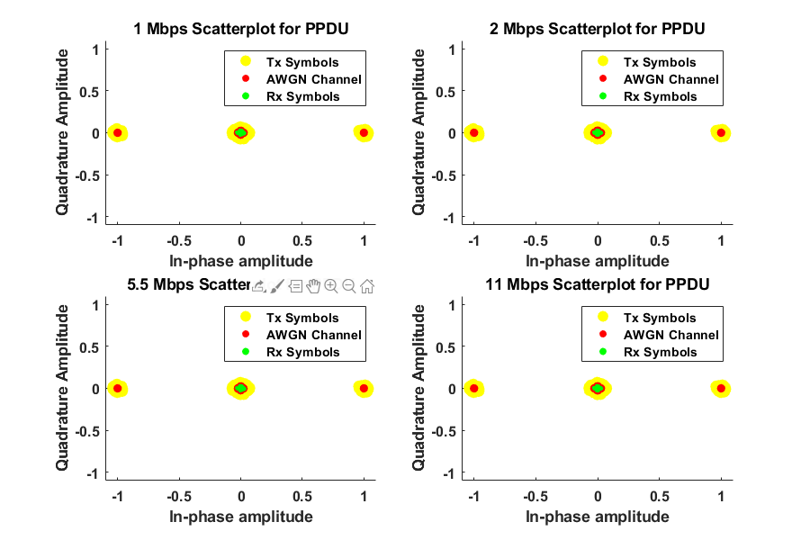
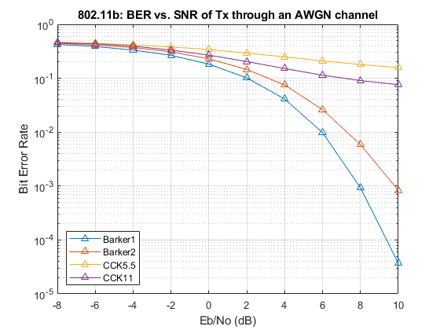

Contents
% ECE408 - Wireless Communications % Jongoh (Andy) Jeong % 802.11b WLAN Standard - Simulation Project % Date: February 19, 2020 clear all; close all; clc;
IEEE 802.11b
reset(RandStream.getGlobalStream); rng default; % for reproducibility % Simulation Parameters snrVector = -8:1:30; nIter = 10; % packet size: min: 4, max: 8192 as per 802.11 standards octetNumber = 1024; % number of octets (will be multiplied by 8) % samples per chip; samples will be up/down-sampled to this reference spc = 8; % call objects for modulation / demodulation with appropriate parameters modFcns = {@(x, rate) ModSchemes.BarkerModulator(x,rate), ... @(x, rate) ModSchemes.BarkerModulator(x,rate), ... @(x, rate) ModSchemes.CCKModulator(x,rate), ... @(x, rate) ModSchemes.CCKModulator(x,rate)}; demodFcns = {@(x, rate) ModSchemes.BarkerDemodulator(x,rate), ... @(x, rate) ModSchemes.BarkerDemodulator(x,rate), ... @(x, rate) ModSchemes.CCKDemodulator(x,rate), ... @(x, rate) ModSchemes.CCKDemodulator(x,rate)}; % supported data rates as per 802.11b standard dataRates = [1, 2, 5.5, 11]; % bits per symbol for all data rates BPSes = [1, 2, 4, 8]; % chip spreading rates for all data rates chipSpreadLengths = [11, 11, 8, 8]; % scrambler initialization seed % scramInit = 93; % msgBinSc = wlanScramble(msgBin,scramInit); % RxBits = wlanScramble(RxBitsDsc, scramInit); BERVector = zeros(length(snrVector),length(dataRates)); fprintf('Simulation starting...\n'); tic; for rate = 1:length(dataRates) %corrersponding to 4 different rate options (1, 2, 5.5, 11 Mbps) fprintf('Data rate: %.1f Mbps\n', dataRates(rate)); for i = 1:length(snrVector) fprintf('SNR: %.1f\t', snrVector(i)); totalbits = 0; nerror = 0; for iter = 1:nIter % adjust SNR sampRate = chipSpreadLengths(rate) * spc; snrdB = snrVector(i) + 10*log10(BPSes(rate)) - 10*log10(sampRate); % generate packet msgBin = randi([0 1],octetNumber*8,1); [preamble, header, psdu] = generatePacket(msgBin, dataRates(rate)); % modulate preambleMod = ModSchemes.BarkerModulator(preamble',1); headerMod = ModSchemes.BarkerModulator(header',1); msgMod = modFcns{rate}(psdu, dataRates(rate)); % PSDU only: upsample, pass through a pulse shaping filter [h, upsampledChips, chipFilterDelay] = Filter.PulseShapeFilter(msgMod, spc); samples = filter(h,1,upsampledChips); % pack a PLCP packet frame txFrame = [preambleMod', headerMod', samples']; % pass through an AWGN channel with adjusted SNR txNoisy = awgn(txFrame, snrdB, 'measured')'; % slice for demodulation preambleTx = txNoisy(1:1584); headerTx = txNoisy(1585:1585+528-1); samplesTx = txNoisy(1585+528:end); % filer back (and downsample) PSDU only % assumption: perfectly knowing impulse response of the filter filtTxSig = filter(h,1,samplesTx); % column vector [RxChips,bitDelay] = Filter.Receiver(filtTxSig, spc, chipFilterDelay, BPSes(rate), chipSpreadLengths(rate)); % demodulate PSDU rxBits = demodFcns{rate}(RxChips, dataRates(rate)); % demodulate preamble and header frameRx = ModSchemes.BarkerDemodulator([preambleTx; headerTx],1); % parse packet frame [preambleRx, headerRx] = parseFrame(frameRx'); checked = checkFrame(preamble, header, preambleRx, headerRx, dataRates(rate)); if checked == true % compute number of error bits overlapSequenceMsgBin = msgBin(1:end-bitDelay); overlapSequenceRxBin = rxBits(bitDelay+1:end); % accumulate error and total bits over iterations nerror = nerror + sum(overlapSequenceMsgBin ~= overlapSequenceRxBin); totalbits = totalbits + (length(rxBits) - bitDelay); fprintf('.'); else error('PLCP preamble and header do NOT match!') end end fprintf('\n'); BERVector(i, rate) = nerror/totalbits; end end toc; fprintf('Simulation completed.\n');
Simulation starting... Data rate: 1.0 Mbps SNR: -8.0 .......... SNR: -7.0 .......... SNR: -6.0 .......... SNR: -5.0 .......... SNR: -4.0 .......... SNR: -3.0 .......... SNR: -2.0 .......... SNR: -1.0 .......... SNR: 0.0 .......... SNR: 1.0 .......... SNR: 2.0 .......... SNR: 3.0 .......... SNR: 4.0 .......... SNR: 5.0 .......... SNR: 6.0 .......... SNR: 7.0 .......... SNR: 8.0 .......... SNR: 9.0 .......... SNR: 10.0 .......... SNR: 11.0 .......... SNR: 12.0 .......... SNR: 13.0 .......... SNR: 14.0 .......... SNR: 15.0 .......... SNR: 16.0 .......... SNR: 17.0 .......... SNR: 18.0 .......... SNR: 19.0 .......... SNR: 20.0 .......... SNR: 21.0 .......... SNR: 22.0 .......... SNR: 23.0 .......... SNR: 24.0 .......... SNR: 25.0 .......... SNR: 26.0 .......... SNR: 27.0 .......... SNR: 28.0 .......... SNR: 29.0 .......... SNR: 30.0 .......... Data rate: 2.0 Mbps SNR: -8.0 .......... SNR: -7.0 .......... SNR: -6.0 .......... SNR: -5.0 .......... SNR: -4.0 .......... SNR: -3.0 .......... SNR: -2.0 .......... SNR: -1.0 .......... SNR: 0.0 .......... SNR: 1.0 .......... SNR: 2.0 .......... SNR: 3.0 .......... SNR: 4.0 .......... SNR: 5.0 .......... SNR: 6.0 .......... SNR: 7.0 .......... SNR: 8.0 .......... SNR: 9.0 .......... SNR: 10.0 .......... SNR: 11.0 .......... SNR: 12.0 .......... SNR: 13.0 .......... SNR: 14.0 .......... SNR: 15.0 .......... SNR: 16.0 .......... SNR: 17.0 .......... SNR: 18.0 .......... SNR: 19.0 .......... SNR: 20.0 .......... SNR: 21.0 .......... SNR: 22.0 .......... SNR: 23.0 .......... SNR: 24.0 .......... SNR: 25.0 .......... SNR: 26.0 .......... SNR: 27.0 .......... SNR: 28.0 .......... SNR: 29.0 .......... SNR: 30.0 .......... Data rate: 5.5 Mbps SNR: -8.0 .......... SNR: -7.0 .......... SNR: -6.0 .......... SNR: -5.0 .......... SNR: -4.0 .......... SNR: -3.0 .......... SNR: -2.0 .......... SNR: -1.0 .......... SNR: 0.0 .......... SNR: 1.0 .......... SNR: 2.0 .......... SNR: 3.0 .......... SNR: 4.0 .......... SNR: 5.0 .......... SNR: 6.0 .......... SNR: 7.0 .......... SNR: 8.0 .......... SNR: 9.0 .......... SNR: 10.0 .......... SNR: 11.0 .......... SNR: 12.0 .......... SNR: 13.0 .......... SNR: 14.0 .......... SNR: 15.0 .......... SNR: 16.0 .......... SNR: 17.0 .......... SNR: 18.0 .......... SNR: 19.0 .......... SNR: 20.0 .......... SNR: 21.0 .......... SNR: 22.0 .......... SNR: 23.0 .......... SNR: 24.0 .......... SNR: 25.0 .......... SNR: 26.0 .......... SNR: 27.0 .......... SNR: 28.0 .......... SNR: 29.0 .......... SNR: 30.0 .......... Data rate: 11.0 Mbps SNR: -8.0 .......... SNR: -7.0 .......... SNR: -6.0 .......... SNR: -5.0 .......... SNR: -4.0 .......... SNR: -3.0 .......... SNR: -2.0 .......... SNR: -1.0 .......... SNR: 0.0 .......... SNR: 1.0 .......... SNR: 2.0 .......... SNR: 3.0 .......... SNR: 4.0 .......... SNR: 5.0 .......... SNR: 6.0 .......... SNR: 7.0 .......... SNR: 8.0 .......... SNR: 9.0 .......... SNR: 10.0 .......... SNR: 11.0 .......... SNR: 12.0 .......... SNR: 13.0 .......... SNR: 14.0 .......... SNR: 15.0 .......... SNR: 16.0 .......... SNR: 17.0 .......... SNR: 18.0 .......... SNR: 19.0 .......... SNR: 20.0 .......... SNR: 21.0 .......... SNR: 22.0 .......... SNR: 23.0 .......... SNR: 24.0 .......... SNR: 25.0 .......... SNR: 26.0 .......... SNR: 27.0 .......... SNR: 28.0 .......... SNR: 29.0 .......... SNR: 30.0 .......... Elapsed time is 366.635681 seconds. Simulation completed.
Scatterplot
clean up after seeing first zero, and scatterplot In-phase vs Quadrature
figure('Position',[300 300 900 600]); % for scatter plots for i = 1:size(BERVector,2) idxZero = find(BERVector(:,i)'==0); BERVector(idxZero:end,i) = 0; fig = subplot(strcat('22',num2str(i))); plotScatter(fig, msgMod, samplesTx, rxBits, dataRates(i)); end
BER curve for each data rate
plot BER curve for each data rate separately
figure('Position',[300 300 900 600]); for rate=1:4 subplot(2,2,rate);semilogy(snrVector,smoothdata(BERVector(:,rate)),'*-');grid on; title_str = {['802.11b: BER for ' num2str(dataRates(rate))... ' Mbps, AWGN']}; title(title_str); xlabel('Eb/No (dB)'); ylabel('Bit Error Rate'); set(gca, 'FontSize', 12, 'FontWeight','bold'); end
BER curve for all data rates
plot BER curve for all data rates
figure('Position',[300 300 900 600]); shapes = ["^-","^-","*-","*-"]; for rate=1:4 semilogy(snrVector, BERVector(:,rate)',shapes(rate), ... 'LineWidth', 2); grid on; hold on; end hold off; title('802.11b: BER vs. SNR of Tx through an AWGN channel'); legend('Barker1','Barker2','CCK5.5','CCK11','Location','SouthWest'); % ylim([1e-4 1e-0]); xlabel('Eb/No (dB)'); ylabel('Bit Error Rate'); set(gca, 'FontSize', 12, 'FontWeight','bold');